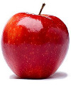
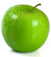

<!DOCTYPE html>
<html>
  <head>
    <title>My experiment</title>
    <script src="jspsych/jspsych.js"></script>
    <script src="jspsych/plugin-html-keyboard-response.js"></script>
    <script src="jspsych/plugin-image-keyboard-response.js"></script>
    <script src="jspsych/plugin-preload.js"></script>
    <link href="jspsych/jspsych.css" rel="stylesheet" type="text/css" />
  </head>
  <body></body>
  <script>
    /* initialize jsPsych */
    var jsPsych = initJsPsych({
        on_finish: function() {
            jsPsych.data.displayData();
        }
    });

    /* timeline var*/
    var timeline = [];

    /* Preloading data */

    var preload = {
        type: jsPsychPreload,
        images: ['static/images/greenapple.jpg', 'static/images/redapple.jpg']
    };

    /* Welcome page */
    var welcome = {
        type: jsPsychHtmlKeyboardResponse,
        stimulus: "<p>Welcome! This is the Go/noGo experiment</p> Have fun"
    };

    timeline.push(welcome)

    var instructions = {
        type: jsPsychHtmlKeyboardResponse,
        stimulus:"<p>Hi and welcome to the experiment</p><p>Whenever you see the <strong>red</strong> apple, you should press the <strong>Space</strong> key</p><p>Whenever you see the <strong>green</strong> apple you should do nothing</p><div class='left center-content'></img><class='small'><strong>Press Space key</strong></div><div class='right center-content'></img><class='small'><strong>Press nothing</strong></div>",
        post_trial_gap: 2000
    }

    timeline.push(instructions)

    
    var test_stimuli = [
        { stimulus: 'static/images/redapple.jpg', correct_response: ' '},
        { stimulus: 'static/images/greenapple.jpg', correct_response: null},
    ];

    var fixation = {
        type: jsPsychHtmlKeyboardResponse,
        stimulus: '<div style="font-size: 60px;">+</div>',
        choices: "NO_KEYS",
        trial_duration: function(){
            return jsPsych.randomization.sampleWithoutReplacement([250,500,750,1000], 1)[0];
        },
        data: {
            task: 'fixation'
        }  
    };

    var test = {
        type: jsPsychImageKeyboardResponse,
        stimulus: jsPsych.timelineVariable('stimulus'),
        
        trial_duration: 500,
        data: {
            task: 'response',
            correct_response: jsPsych.timelineVariable('correct_response')
        },
        on_finish: function(data) {
            data.correct = data.response === data.correct_response;
        }
    };

    var test_procedure = {
        timeline: [fixation, test], 
        timeline_variables: test_stimuli,
        sample: {
            type: 'with-replacement',
            size: 60,
            weights: [3,1]
        }
    };

    var debrief_block = {
  type: jsPsychHtmlKeyboardResponse,
  stimulus: function() {

    var trials = jsPsych.data.get().filter({task: 'response'});
    var correct_trials = trials.filter({correct: true});
    var accuracy = Math.round(correct_trials.count() / trials.count() * 100);
    var rt = Math.round(correct_trials.select('rt').mean());

    return `<p>You responded correctly on ${accuracy}% of the trials.</p>
      <p>Your average response time was ${rt}ms.</p>
      <p>Press any key to complete the experiment. Thank you!</p>`;

  }
};

timeline.push(test_procedure)
timeline.push(debrief_block);
    
jsPsych.run(timeline);

  </script>
</html>